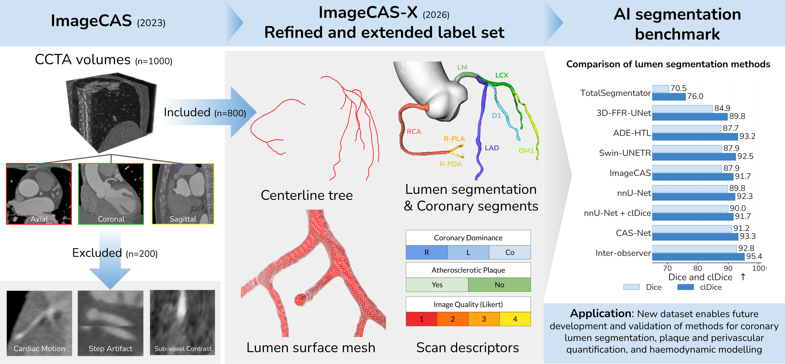

Highlights
- Voxel-wise annotations of the vessel lumen and coronary segments, alongside centerlines and mesh surfaces, for 800 scans of the publicly available ImageCAS cohort.
- Benchmarked 5 coronary-specific segmentation methods and 3 general-purpose segmentation methods, measured against the agreement between expert analysts.
- Performance stratified by disease, image quality, coronary dominance, coronary segment, vessel diameter, and lumen attenuation.
- The labels support development and validation of methods for lumen segmentation, plaque and perivascular quantification, and haemodynamic modelling.
Benchmark
Table 1. Quantitative comparison of vessel segmentation algorithms (top) and expert analysts (bottom) on the held-out test set.
| Method | Lumen Segmentation | Lumen Centerline | ||||
|---|---|---|---|---|---|---|
| DSC ↑ | HD95 ↓ | βerr ↓ | clDice ↑ | ASSD ↓ | HD95 ↓ | |
| TotalSegmentatorWasserthal et al., Radiology: AI, 2023 | 70.5 ± 6.2 | 19.59 ± 6.45 | 4.6 ± 2.9 | 76.0 ± 5.3 | 2.73 ± 0.90 | 23.26 ± 7.17 |
| 3D-FFR-UNetSong et al., IEEE J-BHI, 2022 | 84.9 ± 5.5 | 15.93 ± 20.42 | 4.8 ± 3.5 | 89.8 ± 5.0 | 1.71 ± 1.56 | 17.00 ± 18.23 |
| ADE-HTLZhang et al., IEEE TMI, 2023 | 87.7 ± 2.8 | 2.97 ± 3.74 | 1.5 ± 1.5 | 93.2 ± 3.2 | 0.74 ± 0.39 | 5.61 ± 4.85 |
| Swin-UNETRHatamizadeh et al., MICCAI BrainLes, 2021 | 87.9 ± 2.7 | 3.18 ± 3.68 | 3.8 ± 2.3 | 92.5 ± 3.0 | 0.78 ± 0.36 | 6.16 ± 5.11 |
| ImageCASZeng et al., CMIG, 2023 | 87.9 ± 2.9 | 4.45 ± 4.90 | 4.7 ± 3.1 | 91.7 ± 3.5 | 0.90± 0.46 | 7.81 ± 6.03 |
| nnU-NetIsensee et al., Nature Methods, 2021 | 89.8 ± 3.2 | 7.08 ± 12.65 | 5.6 ± 3.5 | 92.3 ± 3.6 | 1.02 ± 0.75 | 10.41 ± 13.41 |
| nnU-Net + clDiceShit et al., CVPR, 2021 | 90.0 ± 3.5 | 9.70 ± 15.36 | 8.0 ± 4.4 | 91.7 ± 3.9 | 1.20 ± 0.99 | 12.95 ± 14.20 |
| CAS-NetDong et al., Medical Image Analysis, 2023 | 91.2 ± 2.8 | 2.99 ± 3.47 | 1.9 ± 1.5 | 93.3 ± 3.2 | 0.73 ± 0.36 | 5.75 ± 4.98 |
| Inter-observer | 92.8 ± 3.1 | 2.46 ± 3.62 | 0.4 ± 0.4 | 95.4 ± 3.6 | 0.53 ± 0.33 | 4.58 ± 5.75 |
| ImageCAS (labels)Zeng et al., CMIG, 2023 | 41.8 ± 6.7 | 16.15 ± 8.25 | 7.0 ± 6.7 | 78.2 ± 6.9 | 2.23 ± 0.94 | 18.89 ± 8.91 |
Values are mean ± standard deviation. Bold indicates the best performing algorithm. DSC Dice similarity coefficient (%). HD95 95th percentile Hausdorff distance (mm). βerr Betti number error. clDice centerline Dice (%). ASSD average symmetric surface distance (mm).
Citation
@article{bransby2026imagecasx,
title = {ImageCAS-X: a dataset and benchmark for coronary artery segmentation and centerline extraction in coronary CT angiography},
author = {Bransby, Kit M. and {\O}ksnebjerg, Esther and Kj{\ae}r, Kristoffer and
Kirkeby, Jacob and El Youssef, Yasmin and Jim{\'e}nez, A{\"i}da and
Pedersson, Philip R. and de Knegt, Martina C. and Kofoed, Klaus F. and
Paulsen, Rasmus R.},
journal = {arXiv preprint},
year = {2026}
}
Contact
- Corresponding author Kit M. Bransby kimbr@dtu.dk
- Corresponding author Rasmus R. Paulsen rapa@dtu.dk